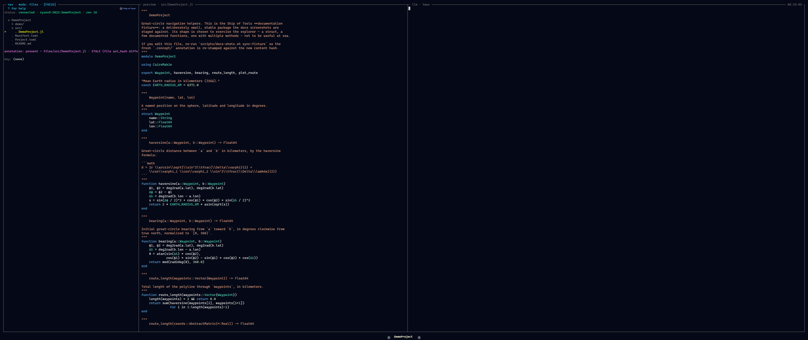

The Concept Layer
The concept layer is what makes Ship of Tools a concept explorer rather than a file browser. It is prose — intent, contracts, meaning, math — attached to the units of a Julia project and kept honest against the code those units describe. The LLM is the primary author and maintainer of this layer; the user can edit it too.

A stale annotation: itssynced_against hash no longer matches the code, so the drift badge renders until someone refreshes the prose.It is built from two layers with very different update mechanics. Keep them separate in your head:
| Layer | Source | Currency | LLM involved? |
|---|---|---|---|
| Structural | parsed mechanically from code via JuliaSyntax.jl (plus live introspection where the project is loaded) | always current | no |
| Annotation | LLM- or user-authored prose attached to nodes in the structural layer | can drift | yes |
The structural layer is derived, never stored as a fact you can get wrong — it is recomputed from the source. The annotation layer is the part that can fall out of sync, so the whole design below is about detecting and surfacing that drift rather than trying to prevent it.
The .concept/ sidecar
Annotations live in a sidecar .concept/ directory at the project root, mirroring the conceptual structure of the project:
.concept/
project/intent.md
modules/MyModule.md
types/MyModule/MyType.md
functions/MyModule/myfunction.md
math/geometry/rotation.mdThe directory is plain files on disk. That is deliberate: it survives a restart, diffs cleanly in git, and is readable without Ship of Tools running. Each path corresponds to a node you can navigate to in a mode — a module in Modules mode, a type in Types mode, a derivation in Math mode — so the annotation for a node is always at a predictable location.
Frontmatter
Each annotation file carries YAML frontmatter that ties the prose to the entity it describes and records when it was last reconciled:
target: MyModule.MyType
target_kind: type
synced_against: <ast_hash>
synced_at: 2026-01-15T14:30Z
authored_by: orchestrator | user
references:
- MyModule.method1
- math/geometry/rotation| Field | Meaning |
|---|---|
target | the entity this annotation describes |
target_kind | what kind of entity (type, function, module, …) |
synced_against | the AST hash of target at the last reconciliation |
synced_at | timestamp of that reconciliation |
authored_by | orchestrator or user — provenance feeds Color Coding |
references | links to other entities or annotations (verification is planned — see below) |
The load-bearing field is synced_against. It is the AST hash of the target as of the last time the annotation was confirmed accurate. Staleness is just a comparison: recompute the target's hash now, and if it differs from synced_against, the prose was written against an older version of the code. Today synced_against is the only field the backend parses; the rest of the frontmatter is preserved verbatim across edits and shown above the editor, but is not otherwise acted on.
The AST hash
The hash is computed from the parsed AST of the targeted entity, not its raw text, so it ignores changes that don't matter and catches changes that do:
- Reformatting and whitespace outside string literals → same hash. Running a formatter does not mark anything stale.
- Whitespace inside docstrings or string literals → different hash. A meaningful docstring edit is a meaningful change.
- Variable renames → different hash.
The algorithm walks the JuliaSyntax.SyntaxNode tree depth-first — SyntaxNode already excludes trivia (whitespace and comments) — emitting each node's kind and, for leaf nodes, the node's source text. That byte stream is hashed with SHA-256 and rendered as the full 64-character hex digest (no truncation, no version prefix).
Update lifecycle
Drift detection is reactive — Ship of Tools surfaces it, you fix it when you choose to:
- You save a file. (Either you edited it, or the orchestrator did.)
- The kernel re-parses the affected files and recomputes AST hashes for the entities in them.
- Annotations whose target's hash changed are marked stale. The comparison is
current_hash != synced_against. - Stale annotations render with a yellowed / wilting badge — and they render that way in every mode, because staleness is a property of the entity's provenance, not of any one view. See Color Coding.
There is no background sweep in phase 1. Nothing recomputes annotations on a timer or refreshes them behind your back. Visible drift is the feature: a yellowed badge tells you the prose may no longer match the code.
Reactive refresh
The intended model is reactive: navigate to the stale annotation and trigger a refresh with a single keypress that re-stamps synced_against (and synced_at) to the target's current hash, marking the prose as reconciled against the present code. You stay in control of when — a refresh asserts the annotation is still accurate, so it is a deliberate act, not an automatic one.
That one-key re-stamp is not yet built. Today you reconcile a stale annotation by editing it in place (e), updating its synced_against in the frontmatter, and saving (Ctrl+S); Esc discards. A background staleness sweep is also explicitly deferred; refresh is on-demand only.
Reference verification (planned)
The references list links an annotation to other entities (MyModule.method1) or to other annotations (math/geometry/rotation). A background pass that verifies these links after every re-index is planned: when a referenced entity no longer exists — a method was deleted, a derivation renamed — the link would be broken, and the annotation marked stale on that basis too, keeping the concept layer internally consistent, not just consistent with code. Today the references field is preserved on disk but not verified.
See also
- Color Coding — how staleness and authorship render across modes.